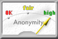
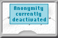
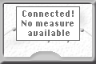
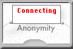

JonDo-Oberfläche Inhalt
JonDo-Oberfläche Inhalt  Bedienung
Minifenster
Bedienung
Minifenster JonDo-Oberfläche Inhalt Bedienung
Minifenster
Das Anonym-O-Meter gibt Ihnen bildliche Meldungen über den Status und die Sicherheit des von Ihnen gewählten Dienstes. Detailinformationen mit konkreteren Daten erhalten Sie unter Details.
|  | Ein solches oder ähnliches Bild zeigt an, dass Sie erfolgreich
eine Verbindung mit einem Anonymisierungsdienst aufgenommen haben.
Die beiden Zeiger geben Ihnen einen Maß dafür an, wie hoch
die maximal mögliche Anonymität auf dem Dienst
einzuschätzen ist, mit dem sie gerade verbunden sind. Der Linke
Zeiger beschreibt Anzahl und regionale bzw. internationale Verteilung
der Server und Betreiber (Optimalwert: mindestens drei Betreiber,
Betreiber und Mixe in jeweils unterschiedlichen Ländern). Der
rechte Zeiger bewertet die aktuelle Nutzerzahl des Dienstes
(Optimalwert: mindestens 500).
Aus diesen Informationen kann ein teilweise subjektives Beobachtungsrisiko und eine maximal erreichbare Anonymität abgeleitet werden. Je mehr Nutzer aktiv sind und auch Nachrichten senden bzw. empfangen, um so größer ist die Anonymitätsgruppe jeder einzelnen ins Internet gesendeten Nachricht, da potentiell jeder Nutzer die Nachricht gesendet haben könnte. Besonders wichtig ist auch die Anzahl und Verteilung der Dienstbetreiber: je mehr Mixe in einer Kaskade stehen, und je weiter und internationaler diese Mixe und deren Betreiber verteilt sind, desto geringer ist die Wahrscheinlichkeit, dass der Benutzer von den Betreibern (oder von Dritten, welche die Betreiber dazu zwingen) beobachtet werden kann. Welcher Wert für Sie persönlich wichtiger ist, hängt vom Beobachter ab, vor dem Sie sich schützen möchten. |
|  | Dieses Bild erscheint, wenn Sie den Anonymitätsmodus ausgeschaltet haben. Sie können weitersurfen, müssen den nicht-anonymen Zugriff aber jeweils bestätigen. |
|  | Wenn dieses oder ein ähnliches Bild gezeigt wird, wurde eine Verbindung zum gewählten Dienst hergestellt und Sie können auch anonym surfen. Allerdings konnten vom InfoService noch keine Statusinformationen geholt werden. Das kann an einem Fehler im InfoService liegen, an einer langsamen Internetanbindung oder einfach daran, dass Sie JonDo die automatischen InfoService-Anfragen verboten haben. |
|  | Während JonDo versucht, eine Verbindung zu einem Anonymisierungsdienst herzustellen, wird dieses Bild gezeigt. Währenddessen wird jede Verbindung ins Internet über JonDo blockiert. |